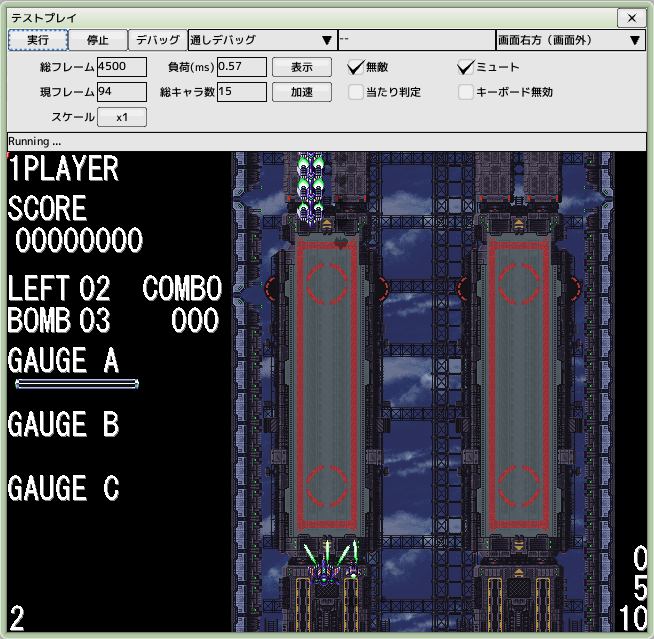
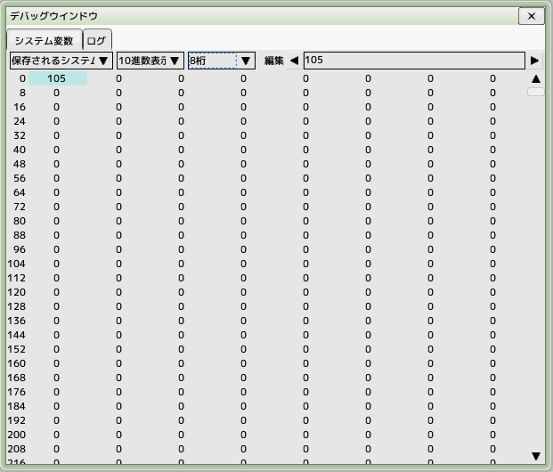

■元のページへ戻る
■元のページへ戻る
テストプレイ

注意事項
テストプレイを行うと全ての変更結果がプロジェクトファイルへ上書き保存されます
エディタ設定で変更できます
テスト内容
- 通しプレイ
全てのシーンを最初から最後までプレイします
- ステージ単体
ステージを実行ウインドウにドロップするとこのモードになります
- キャラクタ単体
キャラクタを実行ウインドウにドロップすることでこのモードになります。配置位置を選択できます
- 編隊単体
編隊を実行ウインドウにドロップすることでこのモードになります。配置位置を選択できます
- 弾幕単体
弾幕を実行ウインドウにドロップすることでこのモードになります。発射位置は真ん中上より固定です
上記のモードはコンボボックスで切り替えることも出来ます
- デバッグ
デバッグボタンを押すとデバッグ情報ウインドウを開きます
- 総フレーム
実行中のステージで設定されている全体フレーム数
- 現フレーム
実行中のステージの現フレーム
- スケール
デバッグ用のウインドウサイズ、デバッグ時にのみ有効です
- 負荷、表示ボタンで以下を切り替え
- ms（ミリ秒）
1フレームの処理にかかった時間
- FPS
秒間のフレームレート
- 総キャラ数
出現中のキャラクタ数
- 加速
16倍速再生と等倍をトグル切り替え
- 無敵
自機のやられ判定をオフにします
- ミュート
全てのサウンドの音量を0にします
- 当たり判定
当たり判定を描画します
- キーボード無効
ゲーム内のキーボード操作を無効化します
ショートカットキー
他の編集ウインドウがアクティブでも有効です
- F5
実行。実行中の場合は再実行
- F6
停止
- CTRL+D
デバッグ情報ウインドウを表示します
デバッグ情報ウインドウ

- 実行中のゲーム内のシステム変数の閲覧と変更ができます、どちらかを選んでください
- ゲーム開始時に初期化されるフラグ
- ゲーム終了後も保存されるフラグ
表示形式と表示桁数を選択できます
- マウスで変更したい場所をクリックします
右上の編集ボックスで数値を編集後、ENTERキーで反映されます
- ログ
スクリプトコマンド、「変数・デバッグ」の内容が表示されます
■ページ上部へ戻る